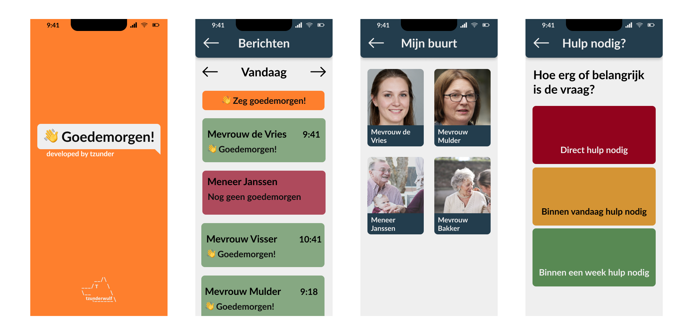

Goedemorgen! is een check-up applicatie voor ouderen. In de applicatie kunnen ouderen zich aansluiten bij een community van buren. Binnen deze community kunnen ze elkaar laten weten dat het nog goed met ze gaat.
Ook kunnen ze hulp vragen binnen hun community. Afhankelijk van de vraag kun je hulp vragen vanuit je familie. Als er hulp nodig is, wordt er een verzoek gestuurd.
Dit project is onderdeel van het persoonlijke leerproject in het derde jaar van de opleiding Creative Media and Game Technologies.
